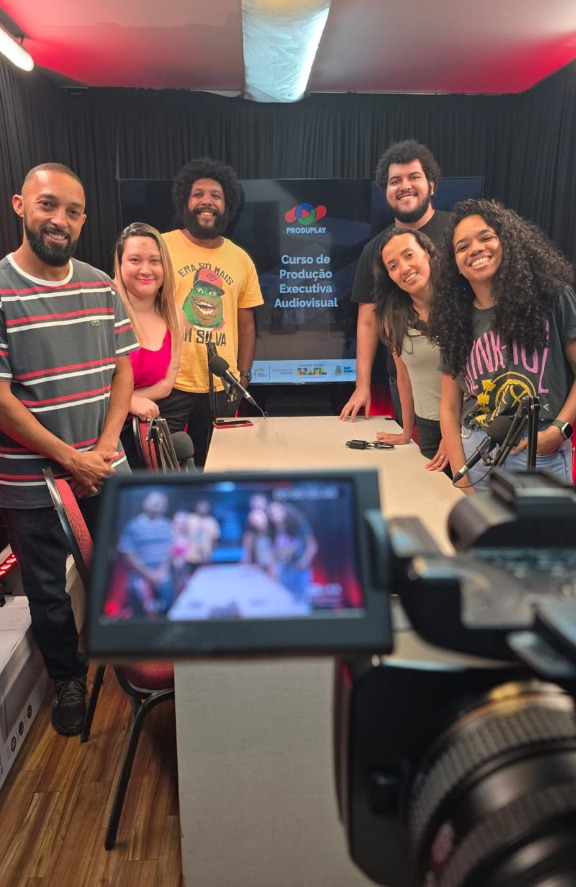
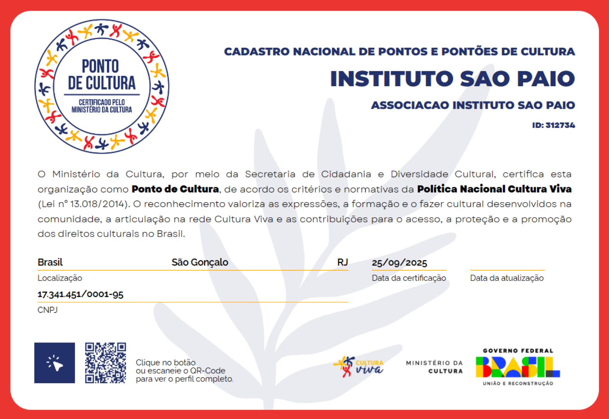

Missão
Promover o desenvolvimento humano e social dos gonçalenses e do Leste Fluminense por meio de ações educacionais, culturais e esportivas, fomentando a inclusão, a diversidade e a sustentabilidade.
Sobre Nós
Uma organização do Terceiro Setor dedicada ao desenvolvimento humano e social em São Gonçalo e no Leste Fluminense.

Fundado em dezembro de 2012 como a Associação Atlética Esporte Futuro, o Instituto nasceu para que alunos-atletas do Colégio Odete São Paio representassem a comunidade em campeonatos estaduais.
Com o tempo, ampliamos a atuação para a educação e a cultura, nos tornando o Instituto São Paio e hoje um Ponto de Cultura oficial, com sede na Rua Odete São Paio, 151, no Colubandê.

O Ministério da Cultura, por meio da Política Nacional Cultura Viva (Lei nº 13.018/2014), certifica o Instituto São Paio como Ponto de Cultura — um reconhecimento que valoriza o nosso fazer cultural junto à comunidade de São Gonçalo.
Cadastro Nacional de Pontos e Pontões de Cultura · ID 312734 · São Gonçalo / RJ
Nasce a Associação Atlética Esporte Futuro, com foco no esporte estudantil.
Sessões gratuitas de cinema na Fazenda do Colubandê alcançam mais de 6 mil espectadores (2014–2016).
Inauguração do teatro de 270 lugares e estúdio de podcast, que se torna o principal polo de atividades.
Certificação oficial pelo Ministério da Cultura e o projeto de transformar a Rua Odete São Paio em um corredor cultural.
Promover o desenvolvimento humano e social dos gonçalenses e do Leste Fluminense por meio de ações educacionais, culturais e esportivas, fomentando a inclusão, a diversidade e a sustentabilidade.
Ser referência em projetos de impacto social, cultural, esportivo e educacional, destacando-se pela inovação, pela inclusão e pela transformação das comunidades atendidas.
Nossos projetos dialogam com os Objetivos de Desenvolvimento Sustentável.